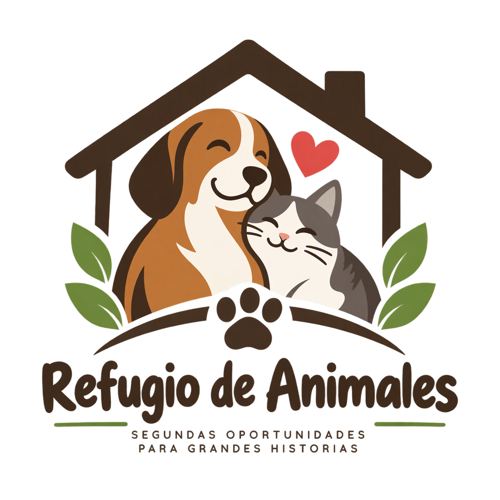

Caso RF-301: Perro en zona comercial
- Categoría
- Perro
- Urgencia
- Alta
- Zona
- Mercado municipal
- Equipo responsable
- Brigada comunitaria Norte
- Estado
- Equipo asignado
Se coordinó el traslado del animal hacia un centro veterinario cercano.

Red colaborativa para la atención y protección animal.
Consulte el avance de las alertas recibidas y las acciones coordinadas por la red comunitaria.
Se coordinó el traslado del animal hacia un centro veterinario cercano.
Un equipo se encuentra verificando las condiciones del lugar antes de realizar la intervención.
El ave fue trasladada para recibir valoración especializada y determinar su recuperación.
El animal recibió atención inicial y fue trasladado a un hogar temporal mientras se localiza a su familia.
La alerta fue registrada y se encuentra pendiente de revisión.
La red está confirmando la ubicación y las condiciones informadas.
Una brigada o grupo de apoyo fue designado para atender el caso.
El animal fue movilizado hacia un centro veterinario, refugio u hogar temporal.
La intervención fue completada y el resultado quedó registrado.